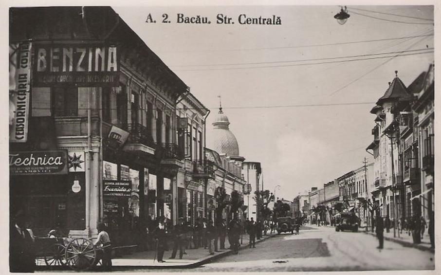
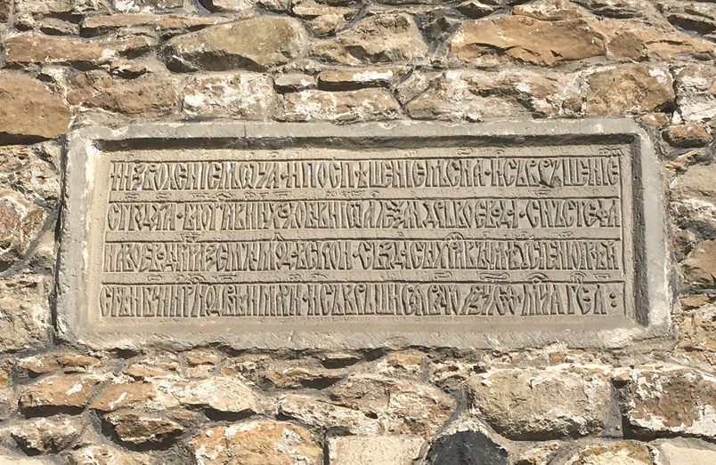

 Zona a fost locuită din timpul paleoliticului superior (aproximativ 5.000 de ani în urmă). În perimetrul Pieții Revoluției s-a descoperit un racloir de silex negru-vinețiu de formă trapezoidală. Obiect folosit la vânătoare în împrejurimile care atunci erau acoperite de păduri. O altă prezență umană în valea localității s-a descoperit cu ocazia săpăturilor pentru Pasajul Mărgineni. La opt metri adâncime, muncitorii găsesc urmele unei așezări din epoca mijlocie a bronzului - Cultura Monteoru. Un strat gros de mâl a păstrat pentru eternitate dovada marilor cataclisme care au modificat relieful. O altă așezare, de data aceasta, fiind identificată ca, aparținând epocii bronzului târziu - Cultura Noua a fost scoasa la lumina în perimetrul Precista (referința). Mai multe fragmente de ceramică din secolul VI - V î. Hr., atestă o așezare hallstattiană pe actuala stradă Bradului, care după cucerirea Daciei de către romani a rămas în afara granițelor Imperiului Roman, fiind locuită de Carpi. Aceștia vor fi în legătura permanentă cu Imperiul Roman, fapt ilustrat de numeroase descoperiri arheologice constând în ceramică, monede și obiecte de podoabă. Biserica Precista O altă așezare din secolele IV-V d.Hr., compusă din șapte locuințe a fost cercetată în zona Curții Domnești. Fiecare locuință are o încăpere cu pereți din bârne și un cuptor de ars ceramică. S-a găsit ceramică lucrată cu roata, dar și cu mâna, precum și o fibulă de bronz. Putem considera că aici era o comunitate sătească autohtonă continuatoare a comunității daco-romane.
La sfârșitul secolului al IX-lea, in regiunile de câmpie ale Moldovei de Sud, dar și în Muntenia și Transilvania, se așează un popor al cărui nume face istorie: pecenegii. Vor sta neclintiți aproape două secole, apoi vor fi alungați peste Dunăre de un alt popor, cumanii. Pentru cumani Bacăul (Bako este un nume peceneg dar și cuman) este locul ideal pentru creșterea cailor, lucru foarte necesar lor. În 1223, la Kalka, vor fi risipiți in urma bătăliei cu tătarii și cei ce au scăpat cu viața, s-au retras în ținuturile dintre Nistru si Carpați. In 1241, tătari pârjolesc și regiunea de la nord-est de Bacău. Pe șoseaua națională Bacău-Bârlad, între satele Traian și Secuieni, jud. Bacău, se bănuiește existența unui mormânt cuman (ref). Cumanii mai importanți erau înhumați alături de câțiva oșteni apropiați (îngropați de vii sau după sinucidere) și alături de calul preferat. Peste mormânt se ridicau movile mari de pământ.
Până cu puțin timp în urmă, prima atestare documentară cunoscută era de pe timpul lui Alexandru cel Bun, 6 octombrie 1408. Cercetătorul Ștefan S. Gorovei, demonstrează că Bacăul are actul de naștere între anii 1391-1432 în timpul domniei lui Petru I Mușat. În 1399 orașul este menționat în documentul lui Iuga Vodă, prin care se dă carte de judecată între spătarul Răducanu cu răzeșii satului Brătila, din ținutul Bacăului. La 15 aprilie 1400, aflăm ca în Bacău se află o parte a Cavalerilor Ioaniți, numiți mai târziu Cavalerii de Malta. O scrisoare este trimisă în Civitas Bachovien de Papa Bonifaciu al II-lea. În 1409 studia la Cracovia, studentul băcăuan Gregorias de Bachwya. Ceva mai târziu, în 5 martie 1431, localitatea este numită civitas Bako. La sfârșitul secolului al XIV-lea Bacăul era bine închegat ca așezare urbană, una dintre cele mai prospere din întreaga Moldovă, având atribuții militare și comerciale foarte importante. Reședința Domnească din vremea lui Alexandru cel Bun corespunde perioadei în care acesta a avut-o de soție pe Margareta de Losoncz, fiica voievodului Ladislau de Losoncz. Orașul Bacău a fost ocupat în noiembrie 1467 de oștile maghiare conduse de Matei Corvin, cu o lună înainte de Bătălia de la Baia. Localitatea este cunoscută și datorită importanței sale în relațiile comerciale dintre Moldova, Transilvania și Țara Românească, fiind un punct de vamă. În secolul al XV-lea în acest oraș s-a stabilit Alexăndrel, fiul lui Ștefan cel Mare, care a dat ordin pentru construirea Curții Domnești și Bisericii Precista, celebre monumente istorice. În anul 1607 papa Paul al V-lea a înființat Episcopia de Bacău, ca episcopiei sufragană (subordonată) Arhiepiscopiei de Kalocsa. Catedrala episcopală, dedicată Sfintei Maria, a suferit importante stricăciuni cu ocazia inundațiilor din anul 1676. În locul vechii catedrale a fost construită în anul 1839 Biserica romano-catolică Sfântul Nicolae din Bacău.